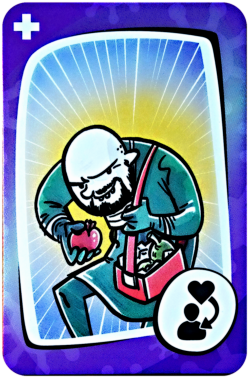
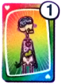
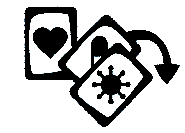
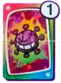
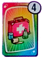

Arrastra la carta sobre cualquier recuadro de órganos de un rival.
¡Se trata de un cambio de cuerpo completo! Intercambia todos tus órganos por los órganos del jugador elegido independientemente de su estado. Esto incluye órganos inmunizados.
Carta especial: Guante de Latex
Arrastra la carta sobre cualquiera de los recuadros de órganos, tuyos o de un rival
Todos los jugadores, a excepción de ti, descartan su mano automáticamente. Ten en cuenta, que si no tienen cartas en la mano, perderán su turno robando cartas nuevas.
Carta especial: Transplante
Arrastra la carta sobre dos órganos diferentes.
Intercambia un órgano por otro.
Normas:1.- No puedes intercambiar órganos inmunizados.
2.- No pueden transplantarse órganos que ya se tienen.
Órgano 1
Órgano 2
(Toca en un recuadro superior para eliminar la seleccion)

Carta especial: LADRÓN DE ÓRGANOS
Simplemente arrastra la carta sobre el órgano que quieras robar
Normas:1.- No puedes robar un órgano si ya lo tienes
2.- Los órganos inmunizados NO se pueden robar
3.- Cuando robas el órgano, también robas las medicinas y virus que estén sobre él.
Descarte en proceso...
Sigue arrastrando ninguna o el resto de las cartas de la mano a la zona de descarte, en el medio del tablero, y pulsa el botón "Fin descarte" para finalizar el turno.
1.- Hay 4 tipos de cartas diferentes: órganos, virus, medicinas y cartas especiales de tratamiento.
2.- Para usar las cartas de tu mano, ¡simplemente arrástralas!
3.- Las cartas de órganos sólo puedes usarlas sobre ti mismo.
4.- Las cartas de medicinas y virus puedes usarlas contra un órgano del mismo color que la carta de cualquier jugador. Aunque, ¿para que ibas a usar un virus sobre ti mismo? ¿O una medicina para curar algún órgano de tu rival?
5.- Reune cuatro órganos sanos de distinto color para ganar el juego.
6.- No puedes tener en tu cuerpo dos órganos iguales en ningún momento.
No te preocupes si no sabes usar las cartas especiales todavía. Cuando vayas a jugarlas, aparecerá un mensaje de ayuda.
¡SUERTE!
Atrás
1/5
Siguiente
Tipo de carta - ÓRGANOS
Reune cuatro órganos sanos de distinto color para ganar el juego. No puedes tener en tu cuerpo dos órganos iguales en ningún momento.

ÓRGANO MULTICOLOR
Este órgano actúa como comodín para ayudarte a completar tu cuerpo y cuenta como órgano a todos los efectos.
Puede vacunarse con una medicina de cualquier color, pero tambien puede ser infectado por un virus de cualquier color.
Nota: Tu cuerpo podrá tener cinco órganos distintos si uno de ellos es el multicolor, y puedes ganar la partida si cuatro de ellos están sanos.
Atrás
2/5
Siguiente
Tipo de carta - VIRUS
Usa las cartas de virus para destruir los órganos y medicinas de tus rivales. Los virus solo tienen efecto sobre órganos y medicinas de su mismo color.
INFECTAR
Arrastra una carta de virus sobre un órgano libre para infectarlo. No podras completar tu cuerpo si alguno de tus órganos está infectado por un virus.
EXTIRPARDestruye un órgano infectado. Coloca un segundo virus sobre un órgano ya infectado: Ese órgano es destruido y las tres cartas van a la pila de descarte.

DESTRUIR VACUNADestruye una vacuna. Elimina la proteccion otorgada por una medicina en un órgano.

VIRUS MULTICOLOR
Este virus comodin puede infectar un órgano o destruir una vacuna de cualquier color
Atrás
3/5
Siguiente
Tipo de carta - MEDICINAS
Las cartas de medicina sirven para proteger tus órganos de los virus. Pueden destruir cartas de virus o proteger órganos para evitar que sean infectados. Utiliza las cartas de medicina sólo sobre cartas (virus u órganos) de su mismo color.
CURARDestruye un virus. Utiliza una medicina para contrarrestar el efecto de un virus de su mismo color que se encuentre sobre un órgano.
VACUNARProtege un órgano. Arrastra una medicina sobre un órgano libre de su mismo color. Ahora tus rivales necesitan dos virus para infectar tu órgano.
INMUNIZAR
Arrastra una segunda medicina sobre un órgano. Este queda protegido para siempre contra el ataque de cualquier virus y no podrá ser destruido ni afectado por las cartas de tratamiento.

MEDICINAS MULTICOLOR
Estas medicinas son comodines. Utilízalas para curar virus o vacunar órganos de cualquier color.
Atrás
4/5
Siguiente
Tipo de carta - TRATAMIENTOS
Las cartas de tratamiento pueden alterar el juego para ayudarte a ganar.Utilízalas en tu beneficio o para evitar que tus rivales completen su cuerpo antes que tú.
TRANSPLANTEIntercambia un órgano por otro entre dos jugadores cualesquiera. No importa si el color de los órganos es diferente, ni si están sanos, infectados o vacunados. Sencillamente el jugador cambia el órgano escogido por otro, siempre y cuando ninguno de los dos jugadores tenga dos órganos del mismo color ni estos estén inmunizados.
LADRÓN DE ÓRGANOSRoba un órgano. de otro jugador y añadelo a tu cuerpo. Puedes robar órganos sanos, vacunados o infectados, pero no inmunes. Recuerda que no puedes tener dos órganos del mismo color.
GUANTE DE LATEX
Todos los jugadores excepto el que utiliza el guante, descartan su mano. Al comienzo de su siguiente turno, al no tener cartas, estos jugadores tan solo podrán robar una nueva mano, perdiendo así un turno de juego.
ERROR MEDICOIntercambia todo tu cuerpo por el de otro jugador, incluyendo órganos virus y vacunas. No importa el número de cartas que cada uno tenga en la mesa. Cuando usas esta carta, los órganos inmunizados también son intercambiados.